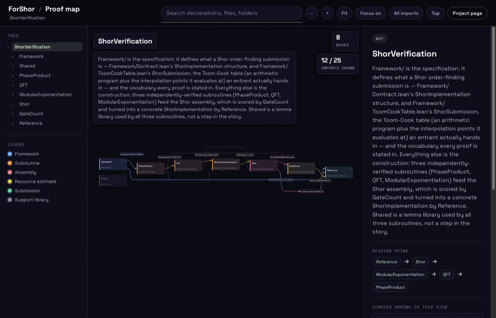
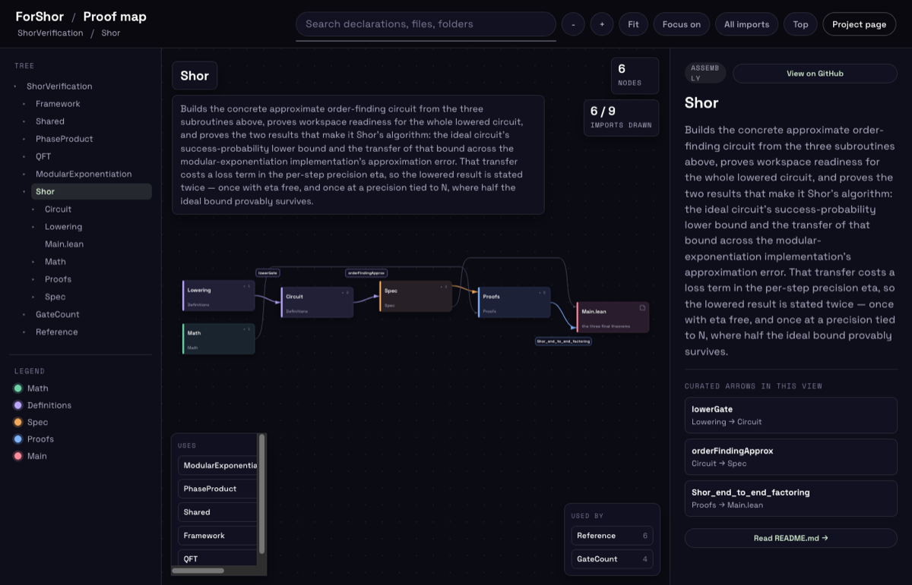
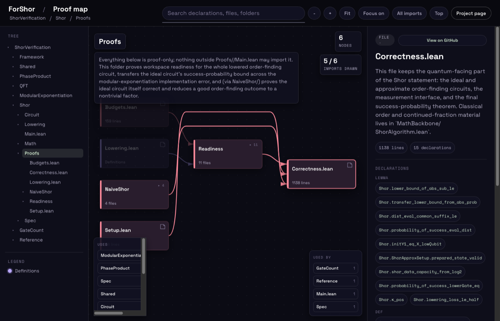

Open the map · GitHub · Paper
A map of the Lean proofs for ForShor
What is actually proved about Shor's algorithm here, and where to find it in the code
The number people quote about Shor's algorithm is a gate count.
Gate counts are how the field argues about when factoring a 2048-bit RSA modulus becomes
feasible, and almost every one of them is an estimate: a circuit design on paper, a cost model,
a spreadsheet. The point of ForShor is that this number can be a theorem. The repository is a
Lean 4 proof that a specific, fully compiled order-finding circuit is correct, and a second proof,
about the same compiled object, that it uses O(n^(2+ε)) elementary gates. Both are
checked by the same kernel, all the way down from a high-level gate language to a low-level
abstract machine, with no sorry and no axioms beyond Lean's own three.#print axioms on the headline theorems reports only propext, Classical.choice and Quot.sound. Decidable side conditions are closed by decide +kernel, never native_decide. The one sorry in the repository is a test that the axiom audit rejects it.
If we had to pick the single most important thing, it is that the resource bound and the correctness proof are about one object. It is not hard to verify an idealised circuit, and it is not hard to estimate a realistic one; the gap between the two is where the surprises live. Here the circuit whose success probability is bounded is the circuit whose gates are counted.
Concretely, three theorems. Shor_correct says the ideal order-finding circuit,
after classical continued-fraction post-processing, returns exactly the order r
with probability at least κ / (log₂ N)⁴.κ = 4e⁻²/π² ≈ 0.0548. The exponent register has log₂(2N²) bits, the modulus register log₂(2N). The classical budget T bounds the convergent scan and costs no gates. This is the probability of getting r itself, not of landing in a good window.
Shor_correct_approx_lowered says the same bound survives compilation, up to a
factor of two, once the per-step precision η is set by a closed form in
N.The lowering itself is exact; the only loss is the modular-exponentiation approximation. Holding it to half the ideal bound costs O(log n) extra work bits, about 270 at 2048 bits. shorPrecision is a closed form, so there is no existential constant a circuit builder would have to guess.
And exists_shorGateCountBound says that for every ε > 0 there is a
Toom-Cook arity k at which the compiled circuit uses at most
C · n^(2+ε) gates, n the size of the modulus register. That count is
an honest count of LowGate operations under an explicit cost model, not an abstract
measure.shorOrderFindingGateCount is LowGate.gateCount shorGateCostModel of the compiled circuit, and shorGateRate ε n is just n^(2+ε). A companion theorem, shorGateCountBound_of_setup, gives any admissible Toom-Cook table the bound at its own exponent log(2k−1)/log k; a k = 2 table runs at about n^2.585. Both theorems are about one table used at every width, which is the right statement for an exponent and not a gate count at n = 2048.
What this site is
The development is about 150 Lean files and 2,600 declarations in nine folders, which is more
than anyone wants to read top to bottom. This site is a map of it: an interactive dependency
graph in which every node is a folder or a .lean file and every arrow is an import.
You can descend from the top-level folders to individual files, read each declaration with its
docstring, jump to the source on GitHub, and see what each piece uses and is used by. It is
meant to answer questions like “where is Shor_correct stated, and what does it rest
on?” without cloning the repository.
The mathematics and the design are in our paper,
ForShor: Formal Verification of Shor's
Algorithm in Lean 4 with Verified Resource Estimation (Suresh, Patel, Cao and Tao, 2026).
The paper tells the story; the map shows where each step of it lives in the
code.The graph is generated from the source by scripts/gen_docs_graph.py, which reads the import lines, docstrings and declarations of every Lean file and each folder's README.md. The few arrows drawn per view are chosen by hand in docs/data/annotations.js and checked against the generated graph, so a renamed file fails the check instead of going stale.
How to use the map

The top view. One column per dependency rank: Framework on the left is the specification, the three subroutines come next, then Shor, GateCount and Reference.
Nodes. Every box is a folder or a file. In the top view a folder's colour is
its role, as the legend in the lower left says. Framework is the specification every
theorem is stated in. PhaseProduct, QFT and
ModularExponentiation are the three subroutines, each verified on its own.
Shor assembles them, GateCount counts the result, and
Reference turns a concrete Toom-Cook table into an executable circuit.
Shared is a lemma library that every subroutine uses and that is not a step of the
argument. Inside a folder the colours switch to layers, Math,
Definitions, Spec, Proofs and Main, which is
how each folder is organised. A folder shows how many children it has; a file shows its line
count.
Arrows. An arrow is an import, drawn from the file that is used to the file that
uses it, so reading a view left to right follows the proof. Not every import is drawn. A solid
coloured arrow with a label is one we chose because the named theorem crosses it; the label is the
theorem, and the pane on the right lists these for the view. A thin grey arrow is real structure
that is not part of the story. A dashed arrow is an import from Shared. The toolbar
button All imports overlays everything that was left out, and Focus on dims
everything unrelated to the current selection, which is the quickest way to see what one file
depends on.

Inside Shor. The three labelled arrows are the theorems that carry the argument from one layer to the next. The strips at the bottom, Uses and Used by, are the imports that cross the folder boundary.
Moving around. Click a folder to descend into its own graph; the tree on the
left and the breadcrumb at the top go back up, and Top returns to the first view. Click
a node to open it on the right: its docstring, its declarations grouped by kind, and a link to
the file on GitHub. The search box finds declarations, files and folders by name. The address bar
follows the view and the selection, so any state of the map can be linked
to.For example navigator.html#/Shor/Proofs?sel=…/Correctness.lean opens the Shor/Proofs view with that file selected.

A file selected. Shor/Proofs/Correctness.lean holds the quantum-facing part of the main statement; the pane lists its lemmas and definitions and links to the source.
Where to start.
Shor_correct
and Shor_correct_approx_lowered
for correctness;
exists_shorGateCountBound
for the gate count; Framework if you want
to know what the statements mean before reading the proofs; and
Reference for the computable instance, the
one lake exe forshor_emit prints as JSON.
Checking it yourself
The project pins Lean v4.28.0 and a fixed Mathlib revision, so the prebuilt cache
applies. With elan installed:
lake exe cache get # prebuilt Mathlib oleans lake build # the whole development lake exe forshor_emit 2 2 15 0 # the reference circuit for (k, a, N, m), as JSON
The construction is generic in its Toom-Cook table: any table that passes four decidable side conditions inherits the correctness theorem and the gate-count bound at its own exponent. The README's Submitting a table explains how such a table is stated and checked.
Citing ForShor
A machine-readable CITATION.cff
is in the repository.
@misc{suresh2026forshor,
author = {Anirudh Suresh and Jai Patel and Yudong Cao and Runzhou Tao},
title = {{ForShor}: Formal Verification of {Shor}'s Algorithm in {Lean~4}
with Verified Resource Estimation},
year = {2026},
howpublished = {\url{https://github.com/VerifiedQC/ForShor}},
note = {Apache-2.0 licensed Lean~4 development}
}
Anirudh Suresh, Jai Patel, Yudong Cao, Runzhou Tao · Apache License 2.0 · Proof map · README · ARCHITECTURE.md · GitHub